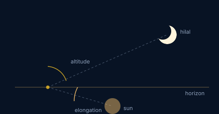
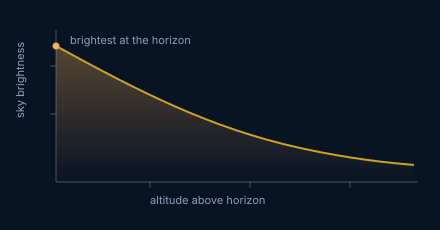
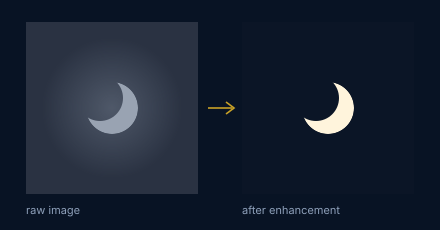
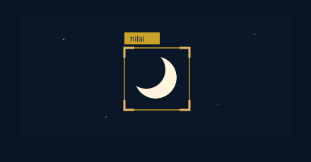

Islamic astronomy
Hisab and rukyah, the fiqh basis for moon sighting, and how classical falak sources translate into criteria a modern system can be held to.
View papers →The crescent is faint, the sky behind it is bright, and the decision that follows has to be defensible.
Research Assistant and PhD candidate at the East Coast Environmental Research Institute, Universiti Sultan Zainal Abidin
Right now
Where the month currently stands. A crescent below roughly three percent illumination is close to the limit of what any instrument will recover from a bright twilight sky, which is the case my work is built for.
Computed from the mean synodic month against a known conjunction, so it is geocentric and accurate to within a few hours. It is not a sighting prediction and carries no weight in isbat. The orientation drawn is schematic.
About
I am a Research Assistant and PhD candidate at the East Coast Environmental Research Institute (ESERI), Universiti Sultan Zainal Abidin, based at Balai Cerap KUSZA in Terengganu. My research asks a question that is older than any camera: can the new crescent moon be seen this evening? The answer decides when an Islamic month begins, and I work on answering it with instruments and code rather than the naked eye alone.
In practice that means building detection systems that find the hilalhilalThe thin new crescent moon. Its first sighting after conjunction is what begins a new Islamic month. in images taken at KUSZA and other Malaysian observatories. The early work used contrast enhancement and transform-based methods such as the Circular Hough TransformCircular Hough TransformA classical image processing method for finding circles. Every edge pixel votes for the circles it could lie on, and the circle with the most votes wins.. The current work applies object detection with deep learning, aimed at automated detection that runs on live observation rather than archived data. Around the detection problem sit the questions that shape it: sky brightness and light pollution at observation sites, the limits of optical equipment for a thin crescent, and the criteria that isbatisbatThe formal confirmation that a new Islamic month has begun, declared by a religious authority on the evidence put before it. committees actually use.
My training started in Islamic studies. I completed a Diploma and then a Bachelor of Islamic Studies in Syariah at UniSZA, specialising in Islamic astronomy, followed by a Master of Science in Astronomy on image processing for crescent visibility detection. That sequence is the reason I work the way I do. Hilal determination is a question of fiqhfiqhIslamic jurisprudence. Here it governs what counts as acceptable evidence that the crescent was seen. before it is a question of optics, and a detection system that ignores either half is not much use to the people who have to make the decision. So the work runs in both directions: applying computer vision to observation data, and keeping the output legible to the falakfalakIslamic astronomy. The classical science of calculating and observing the positions of the sun and moon for religious timekeeping. criteria it will be judged against.
To date this has produced 13 journal articles, 11 conference proceedings and 4 book chapters, a patent filing and seven registered copyrights, four industry grants as co-researcher, and 13 innovation and invention awards. Part of the work has meant taking the systems out of the lab, including installation and hands-on training on the HOTOHHOTOHHybrid Observation Technique of Hilal. The observation and image processing system built from this research, described under Projects. system for the Terengganu State Mufti Office, and teaching telescope use for moon sighting to surveyors and students.
Research
Four threads, one problem. Each exists because the crescent is faint, the sky behind it is bright, and the decision that follows has to be defensible.

Hisab and rukyah, the fiqh basis for moon sighting, and how classical falak sources translate into criteria a modern system can be held to.
View papers →
Field observation at Malaysian sites, the limits of optical equipment for a thin crescent, and how sky brightness and light pollution constrain what is recoverable.
View papers →
Contrast enhancement and transform-based methods for pulling a low-contrast crescent out of a bright twilight sky, including Circular Hough Transform detection.
View papers →
Object detection applied to crescent imagery, including YOLO-based approaches, aimed at automated detection that runs on live observation rather than archived data.
View papers →Try it
Drag the handle across the frame. The left is the exposure as the sensor recorded it, where the crescent sits only a few levels above the twilight gradient around it. The right is the same pixels after a contrast-limited local stretch. Then let the Circular Hough Transform find the lunar disc from its edge alone.
Systems
Software and instrumentation that came out of the research and left the lab: one patent filing and seven registered copyrights, several of them deployed with the people who make the sighting decision.
Hybrid Observation Roslan Technique of Hilal. The hybrid observation method that the HOTOH systems are built on, combining optical observation with image processing so that a faint crescent can be recorded and verified rather than only glimpsed.
Read more →Hybrid Observation Technique of Hilal, second generation. Image processing for hilal visibility detection implemented in Python. Installed and taught to the Terengganu State Mufti Office for its own observations.
Read more →Malaysia Smart Integrated Global Hilal Tracker. An integrated tracker that brings hilal observation records and site conditions across Malaysian observation sites into one system.
Read more →Papers
One paper, explained in plain language, followed by a few selected publications. The full list lives on the publications page.
A hilal image is mostly sky. The crescent is a thin arc of light sitting in a bright twilight gradient, and a human observer finds it by knowing roughly where to look. This paper asks whether a classical shape detector can do the same without being told where to look.
The Circular Hough Transform votes for circles that are consistent with the edges in an image. Because a crescent is a segment of the lunar disc, its edge still belongs to a circle, so the transform can locate the disc even when only a sliver of it is lit. Applied to enhanced hilal observation images, the method turns the sighting into a measurable output rather than a judgement call, which is the step that makes later automation possible.
It is the bridge between the image enhancement work in my MSc and the deep learning detection in my PhD.
Selected publications
Teaching
Getting the systems into the hands of the people who use them: mufti office staff, surveyors, observatory visitors, and secondary school students preparing for the Falak Olympiad.
Teaching, installation and hands-on practical training on the HOTOH system for the Terengganu State Mufti Office, so that the office can run its own hilal observation with the system.
Training Sarawak Land Surveyor staff to use telescopes and other optical equipment for moon sighting observation, as part of a falak competency certificate.
A practical guide to using the telescope, paired with teaching how the Islamic calendar system is determined from the observation.
Teaching materials
An interactive falak module built for classroom use and registered as a copyright.
Read more →The AL-KAHF card game and augmented reality activity for teaching astronomy, published in Jurnal Fizik Malaysia and awarded at UniCEL, MPI, IUCEL and SPFK 2023.
Read more →Talks
Where the work gets argued with: 8 oral presentations and 3 posters at national and international meetings.
The PhD work presented at the Asia Pacific Regional IAU Meeting: a deep learning detector trained on hilal imagery, aimed at calendar determination rather than only detection for its own sake.
First results from applying You Only Look Once object detection to hilal images, the starting point for the deep learning detector developed in the PhD.
More presentations
Outreach
The observatory is a public building as well as a research site, and moon sighting is a communal act before it is a technical one. These are the programmes where the two meet.
Exhibitor for ESERI. Teaching the community and visiting schools about celestial objects, with live solar observation.
Exhibitor for UniSZA, guiding primary school pupils through what the Sun is and how to observe it safely.
Leading students through solar observation and the AL-KAHF astronomy card game.
Astrotourism operator, guiding a hundred participants through an astronomy festival under a dark sky.
A visitor experience and astronomy knowledge programme built around the observatory, opening it to people who are not astronomers. Best Design Award, ITIEC 2025.
Read more →The light pollution measurement work doubles as an argument for protecting what is left of the night sky at Malaysian observing sites.
Career
All degrees at Universiti Sultan Zainal Abidin. The full CV, including the appendices, is available as a PDF.
Professional appointments
Education
Research grants, as co-researcher
| Project | Funder | Year | Status |
|---|---|---|---|
| Development of image processing techniques software in the study of determining hilal visibility in Terengganu | MAIDAM | 2025 | In progress |
| Study of asteroid position coordinates to obtain an international observatory code for the MAINS Baitul Hilal Complex | MAINS | 2024 | Completed 2025 |
| Effectiveness of small to medium-sized mobile astrophotography telescope systems for sky survey work at the MAINS Baitul Hilal Complex | MAINS | 2024 | Completed 2025 |
| Effects of light pollution on the limitation of new moon (hilal) and celestial object visibility at Terengganu hilal observation locations | MAIDAM | 2023 | Completed 2024 |
MAIDAM is the Terengganu Islamic Religious and Malay Customs Council. MAINS is the Negeri Sembilan Islamic Religious Council.
Recognition
Innovation and invention awards for the systems, and the societies I work through.
Memberships
Selected training
Get in touch
Open to collaboration on crescent detection, observation systems and sky quality monitoring.
ahmadlutfiafifi12345@gmail.comBalai Cerap KUSZA, East Coast Environmental Research Institute
Universiti Sultan Zainal Abidin, 21300 Kuala Nerus, Terengganu, Malaysia